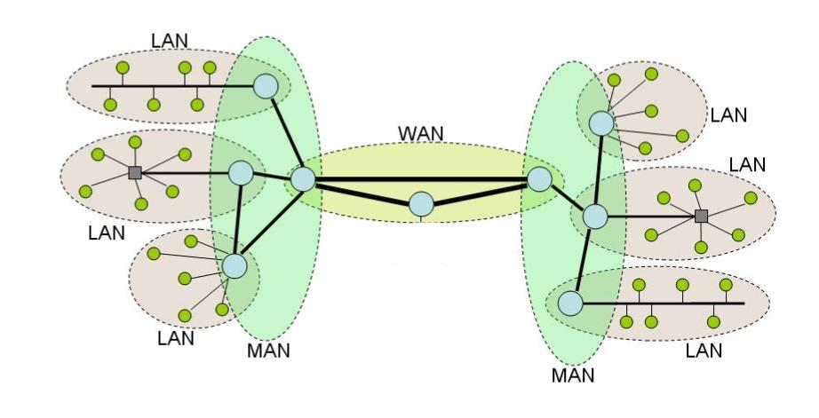

How the Internet Works
Thu 10 September 2015
What is the internet?
One thing I’d like to clarify right off the bat is that when we connect to the internet we are connecting to other physical computers. Any service accessed through the internet- email, Skype, reading the news online- is the result of obtaining data from one or more physical computers. The internet isn’t some magical entity where resources appear out of thin air. Indeed, files saved on an online storage system are physically stored on one or more physical computer somewhere in the world. Those of you who already knew this might find it silly of me to point this out, but I’m sure that there are people out there who have this misconception - I used to be one of them.
In order to understand the structure of the internet, we'll begin by talking about computer networks in general.
Types of Networks
Different types of computer networks can be classified by size. Lets start with the smallest and work our way up to the largest - the internet:
- The smallest type of network is a Personal Area Network (PAN). A good example of this type of network is the use of bluetooth. In a personal area network computers are interacting with each other over a very short distance.
- The second smallest type of network is a Local Area Network, or LAN. These networks span the area of a house, or a few floors of an office building. As an example: consider how the computers in an office building are often all connected to the same printer. Another example of the use of a LAN would be you pinging 1 your co-workers computer when you’re both in the office. The 'ping' would travel from your computer to your office's router2 and then to your coworker's computer.
- At a larger scale we have Metropolitan Area Network (MAN) which can span the distance of a few blocks or the entire city. An example of a MAN would be the network of computers that are serviced by a particular Internet Service Provider (ISP) within the city of Toronto. Indeed all of the modems which provide the LANs with internet, are connected to each other through Internet Exchange Points (IXPs) within the city.
- Anything larger than a MAN is considered to be a Wide Area Network, or WAN. The largest WAN is the internet, connecting computers all over the earth.
The internet can be thought of as a compilation of some of these smaller networks. One might call it a 'network of networks'.
Let's walk through some of the networks I'm connected to when I access the internet from my apartment in Toronto. At the smallest level I'm connected to my LAN through my router. This router communicates with my modem which allows me access to the city-wide network of computers serviced by my internet provider, a MAN. Then, all of the internet providers within Toronto connect to each other at IXPs to create an even larger MAN. And all of these large MANs accross the globe connect to one another through various IXPs, creating what we call the internet! The following image 3 serves as a good visual depiction of the internet as a network of networks:

Physically how are computers connected?
Sometimes transmission happens wirelessly, other times it happens through physical wires. Bluetooth and wifi are examples of a wireless network connections. In these situations radio signals are used to carry data from one computer to the next. Most of these wireless networks happen over very short distances. Between cities and countries and continents, computers are usually connected through wires. Yes, wires are literally in the ocean, connecting continents so that we can chat to people across the globe.
Cool. Now we have an idea of what the internet is. It is a network of computer networks connecting computers accross the globe. These connections can be wireless or through wires. But how does it work?
How is data transmitted?
How do computers understand each other? How does a message get to the appropriate computer? Introducing... the protocol stack!
The Protocol Stack
A protocol is just a set of rules that computers obey when they exchange data. Every type of communication that occurs over the internet uses a set of protocols specified by its corresponding protocol stack. Different applications (skype, email, etc) may use different protocol stacks. Here is a diagram depicting the primary layers in the stack:

As you can see from the diagram, when data gets sent from Computer 1 to Computer 2, Computer 1 first has to prepare the data for its transmission by going through each of the layers of the protocol stack to add information, package it up, possibly encode or translate it. When the data is ready, it is passed through the internet from Computer 1 to Computer 2, where the data is unpacked and transformed into its original form. Lets start from the bottom and work our way up, describing briefly each of these layers.
Hardware Layer:
This layer is responsible for translating messages from your computer's native language (in 0s and 1s) to signals that can be transmitted either through wire or radio signals. Most laptops today have hardware specific for both the ethernet cable and for wifi. Note that different hardware is required in your computer for each kind of physical connection. Often the protocol associated with this hardware requires that the unique address on the associated hardware be specified when going from one computer to the next. This address is called the Media Access Control address, or MAC address.
You can find your computer's MAC addresses, by typing the following command into your terminal: $ networksetup -listallhardwareports. You should see several different types of hardware appear, including wifi and ethernet, each with their own 'ethernet address'. This 'ethernet address' is that hardware's MAC address! A couple of my entries look like this:
1 2 3 4 5 6 7 | Hardware Port: Ethernet
Device: en0
Ethernet Address: 9f:68:90:ce:82:62
Hardware Port: Wi-Fi
Device: en1
Ethernet Address: 70:27:92:c6:db:63
|
Internet Protocol Layer:
Every computer on the internet is marked with a ‘unique’ address called an Internet Protocol address, or IP address. In order for data to move from one computer to the next, it must be labeled with the target IP address and the sender’s IP address. IP addresses can be split into two categories, public and private. Public IPs are given to every computer ‘visible’ on the internet and are guaranteed to be unique. Private IPs are given to computers within the same Local Area Network and need only be unique with respect to the other IPs on that network. When you connect to your wifi at home, your router is acting as your gateway to the internet and your private IP allows your router to distinguish your computer from others on the local network.
IP addresses can also be static or dynamic. Static IP addresses are permanent; they don't change. A computer with a static IP address will have the exact same IP address for the duration of its contract with an Internet Service Provider. This requires the ISP to effectively reserve an IP address for a single computer. In contrast, dynamic IP addresses are temporary in nature. A computer is re-assigned a dynamic IP address each time it connects to the internet (or, sometimes, even mid-session). Consequently, ISPs can re-use dynamic IP addresses. For example, consider the dynamic IP address that is assigned to my computer when I connect to the wifi at a local coffee shop. This IP address is not reserved for my computer alone, and may be re-assigned to another computer when I leave. Because they are re-usable, dynamic IP addresses are less costly than static IPs. Most personal devices will make use of dynamic IPs, while servers usually rely on static IP addresses.
Transport Protocol Layer:
Among other things, the transport protocol is in charge of labelling which port number on a receiving computer a message is sent to. You can think of the port as being analogous to specifying a person’s name on a letter to distinguish which person in a house the letter is being sent to. Since your computer has multiple applications accessing the internet, the port number specifies which application incoming data is meant for. This allows multiple processes to share the same hardware resources without interfering with one another. Without port numbers, a computer's operating system would have a hard time knowing which application (a web browser, email service) an incoming message was meant for.
Other responsibilities of the transport layer may include segmentation and desegmentation of the data, ensuring sent data is received, and ensuring it is received in the desired order.
Application Level Protocol:
Specific to the application, be it email, skype, or the world wide web. In the following example we will discuss the Hyper Text Transfer Protocol (HTTP), which is a popular Application Level Protocol.
Classic Example: Suppose I’m connecting to the internet through my apartment’s wifi and I type www.wikipedia.com into my browser and press enter.
Here the application in use is the world wide web. The request will be formatted according to the application level protocols specifications (in this case HTTP): HTTP 1.1/ GET wiki/main_page. This tells the application on the receiving end that we are using HTTP protocol and that we wish to GET (meaning retrieve) the resource specified. This message will get passed from our browser (the application) to the computer’s operating system where the transport protocol will do its work. In this example TCP, Transmission Control Protocol will be used. When necessary, TCP will split the message into smaller (more manageable) chunks called packets before sending. In this case, each packet will also be labeled so that the receiver knows in which order the packets should be read. TCP will also attach the port number (in this case 80) to each packet. Next, the Internet Protocol further packages each packet with the sender and receiver's IP addresses, before handing over control to the hardware/link layer. This layer wraps the packages with the wifi MAC address on your computer and translates messages into radio signals to be sent to the router. This message will go from computer to computer, continually unpacked and repackaged by the hardware layers as it travels, until it reaches its destination, where the wiki/main_page resource lives. The destination computer will translate the message into its native language through the hardware layer. Then the TCP layer will ensure that each package has arrived (remember that they are labelled) and if one is missing, the computer will send out a request for the missing packet. If all have arrived, it will place them in order, and send them to the appropriate computer application. This main wiki page will then be retrieved from the application, and the process of packaging it up for sending will commence. The resource will be wrapped with the message HTTP 1.1 200 OK before being split up into manageable chunks, labeled, then repackaged with the IP address of the destination and sender, and further translated and prepared by the hardware layer before being sent out. When the message finds its way back to our computer, it will be unpacked by each layer until the contents of the message, the wiki/main_page, is provided to our browser to display.
Stay Tuned... Domain Names and Routing!
At this point we’ve answered a lot of questions in regards to how the internet works. But, there’s still a big missing piece of the puzzle, namely, how does my computer know the IP address of the computer we want a resource from, and how does my router know how to navigate to that computer?
Thanks
Thanks for reading along on this journey to better understand the internet. There is, of course, still lots of details that I have left out of this discussion, and much that I still have to learn, but I think I've provided enough details to staisfy some itching curiousities. Don't hesitate to reach out if anything is unclear or if you have any questions! I can't guarantee I have all the answers, but if I don't, I might be curious as well!
Big thanks to Jasmin Lantos for studying this topic with me during our 10% time at Security Compass!
-
For anyone unfamiliar with the PING command, try it out! Simply type
ping ip_addressto effectively 'ping' the computer with the corresponding IP address. You can also ping a server by their hostname. ↩ -
The difference between a router and a modem confsed me at first, so I'm going to take a moment to describe their purposes in your home. Your router is what allows several computer to connect to the internet simultaneously. The router is connected to the motem, and the motem is what is needed to gain access to the internet through your Internet Service Provider. This means that if you only want one computer to have access to the internet at a time in your househole, you only need a motem, not a router. Similarily, if you just wanted to communicate with other computers in your home, and not to other computers in the world, you could just use a router and do away with the motem and the internet service provider. Sometimes you can buy a box that is both a router and a motem all in one. ↩
-
This image is adapted from http://www.gta.ufrj.br/ensino/eel879/trabalhos_vf_2008_2/igorcamp/LAN_MAN_WAN.JPG ↩
{kind=link}